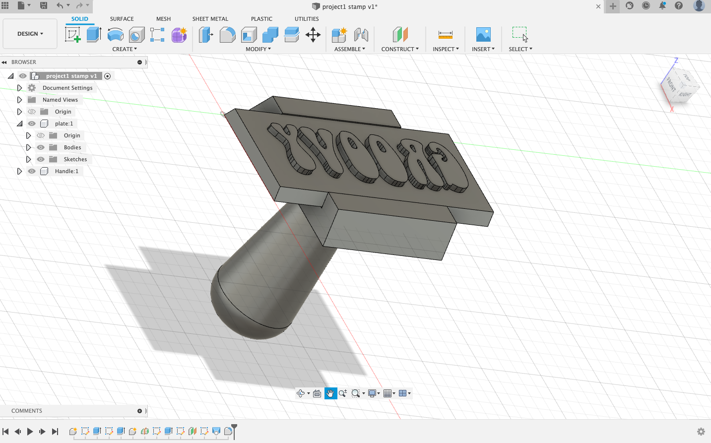
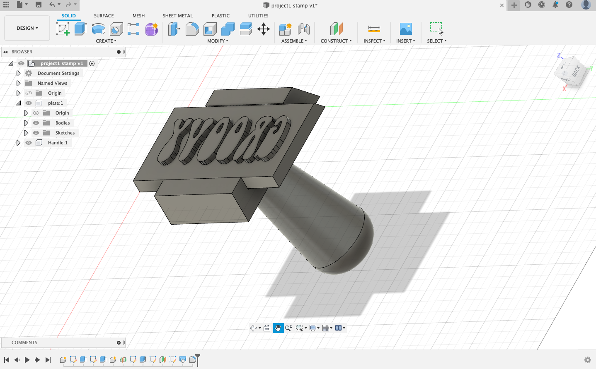
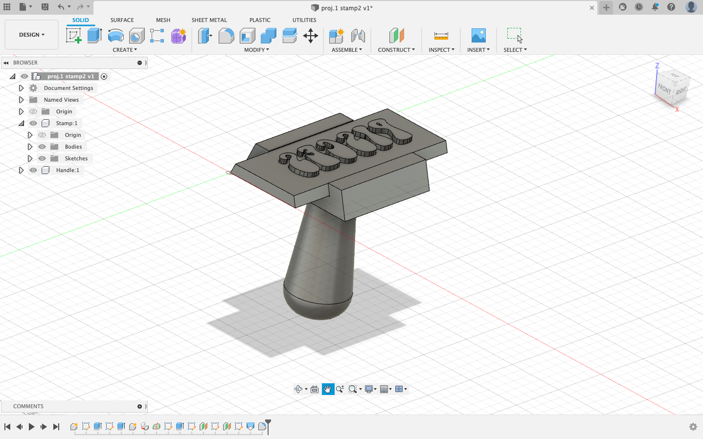

FUSION EXERCISE 1
The two stamps I created we're inspired by the font I chose which emphasizes a hippy aesthetic and my interest for astrology. I encountered many challenges including missing small steps along the way such as not clicking on the highlighted midplane section, not clicking to end the line, and forgetting to tab when putting in different values. The program was difficult to navigate but I was able to adjust to it more easily with practice on my second stamp.
"Groovy" Stamp https://a360.co/34FSncY


"Pisces" Stamp https://a360.co/3uygBkl
